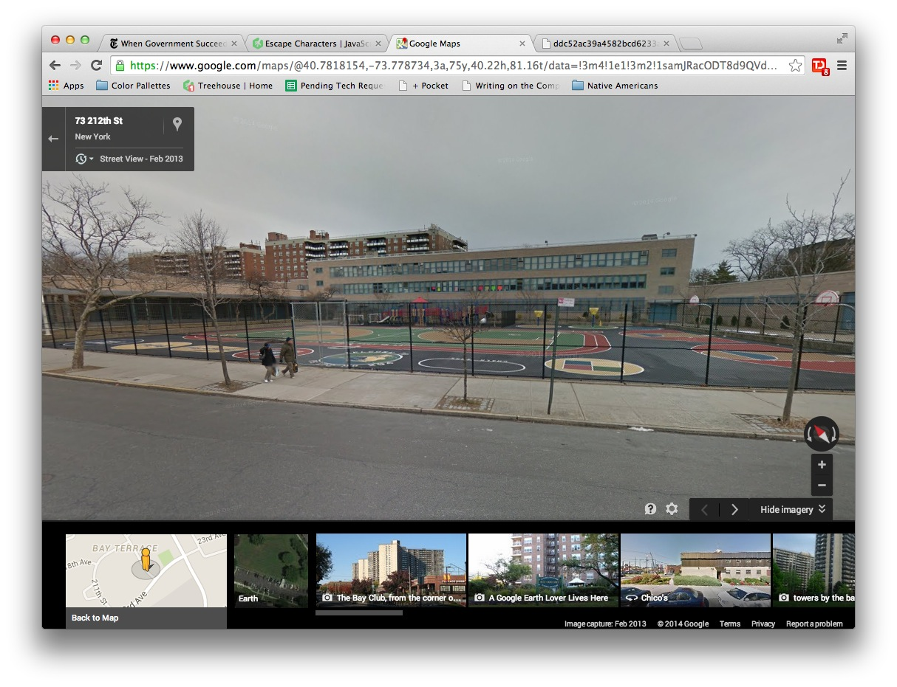
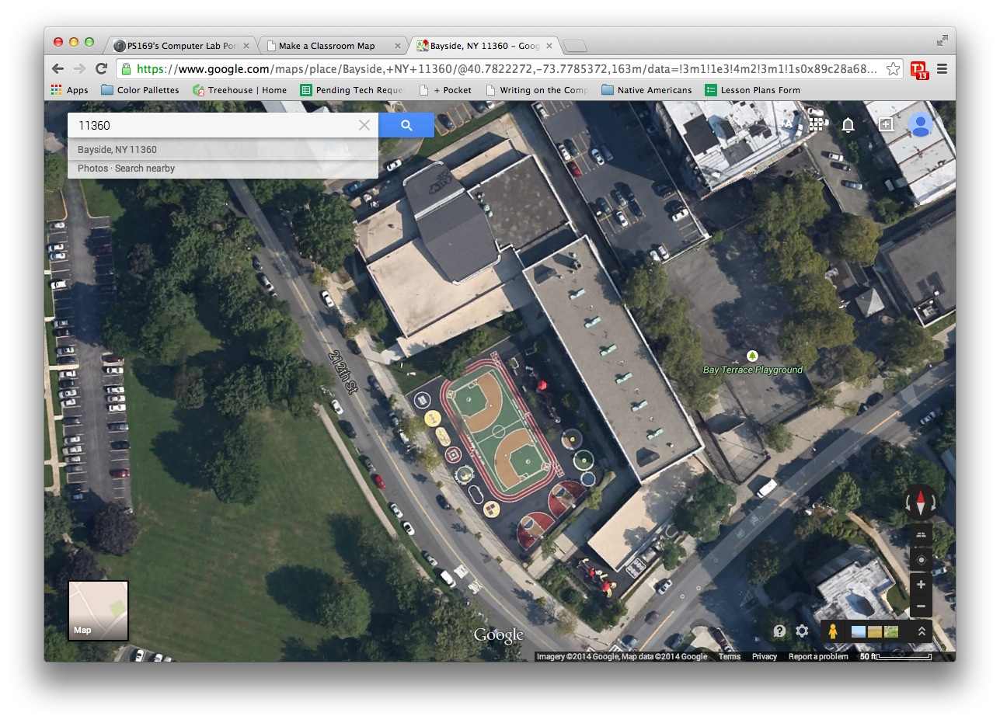
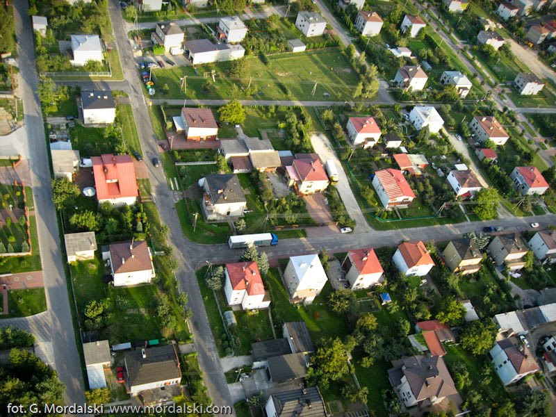
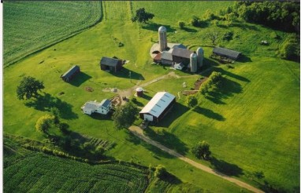
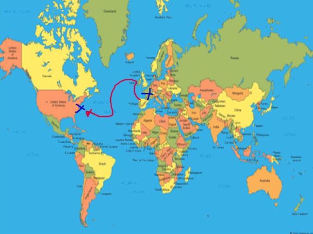
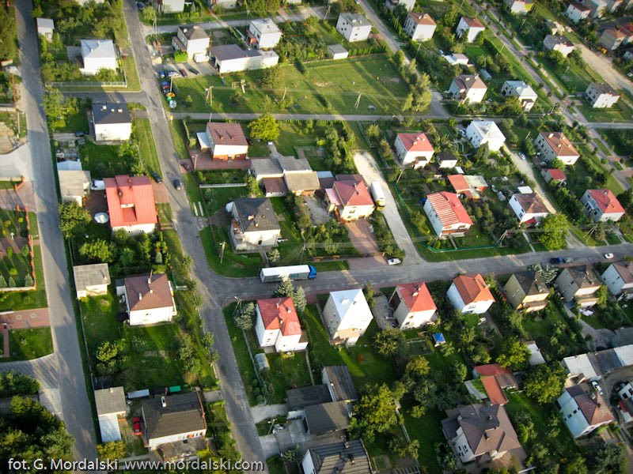
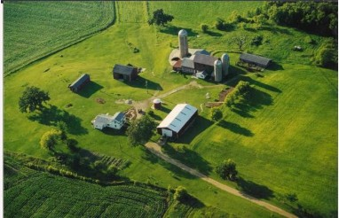
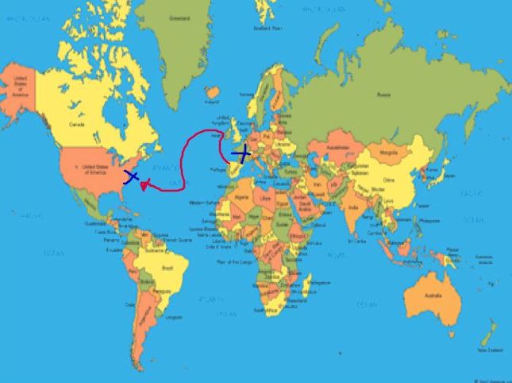

Project Intro
For this project we are going to use Kid Pix to make a map. We will use the Shapes Tool to make a map of either our classroom, or a room in our home. We will also use the T-Tool to write the names of the things in our map, so that people will know what they are looking at.
Teaching Point:
Today we will learn what Bird's Eye View means.
Bird's Eye View
There are different ways that we can look at a map. One of the maps we see the most is Bird's Eye View. A Bird's Eye View map is a map of something that is seen from the sky, the way a bird would see it. Here are two pictures of our School. One is what it looks like when we are walking up to it on the street. The other is Birds Eye View. How does the same thing look different when it is in Bird's Eye View?
 Here are some other pictures in Bird's Eye View. What can we see in these pictures and what Shapes are they?
 





Today's Assignment
Fill out the form below.
Back to School Portal